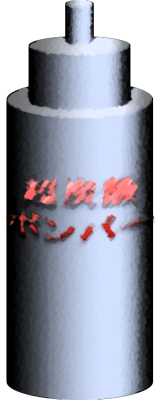

Script 00001039

――ようクソ野郎ども！ ついに人間がコンビニで買えるドリンクで空を飛べる日がやってきたぜ！

ここにあるのは先日、日本で発売された超炭酸ボンバーだ！
ボトル缶だけで重さが1キログラムもあるすごいものだ！
ボトル缶だけで重さが1キログラムもあるすごいものだ！
さて、まずは1本でどこまで飛ぶか試すぜ！
方法はペットボトルロケットと同じ！ ただし、空気は補充せずにボトルを振るだけだ。
これをペットボトルロケットの台に設置して、このスイッチを押せば自動的に蓋が開く。